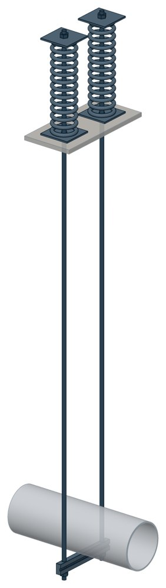

Опоры жесткие подвесные пружинные, блоки Т27
Серия 4.903-10 вып. 6. Dн 159–426 мм, вертикальная нагрузка — до 47,07 кН, масса 35,1–192,1 кг.

- Диаметр трубы Dн
- 159–426 мм
- Документ
- Серия 4.903-10 вып. 6
- Исполнений
- 14
- Вертикальная нагрузка
- до 4800 кгс
- Масса
- 35,1–192,1 кг
- 3D-модели
- у всех исполнений (условные: общий вид по габаритам)
Таблица исполнений Т27
| Обозначение | Код ПРОМБУРГ | Dнмм | Вертикальная нагрузкакгс | Вертикальное перемещение Δмм | Диаметр тяги dмм | Высота Нмм | Длина балки Lмм | Массакг | 3D |
|---|---|---|---|---|---|---|---|---|---|
| Т27.01 | ПБ-Т27-0159-1 | 159 | 1050 | 50 | 16 | 2260 | 250 | 35,1 | 3D |
| Т27.02 | ПБ-Т27-0159-2 | 159 | 1050 | 100 | 16 | 2260 | 250 | 51,7 | 3D |
| Т27.03 | ПБ-Т27-0194-1 | 194 | 1600 | 50 | 16 | 2280 | 280 | 38,2 | 3D |
| Т27.04 | ПБ-Т27-0194-2 | 194 | 1600 | 100 | 16 | 2280 | 280 | 56,7 | 3D |
| Т27.05 | ПБ-Т27-0219-1 | 219 | 2300 | 50 | 20 | 2320 | 310 | 61,6 | 3D |
| Т27.06 | ПБ-Т27-0219-2 | 219 | 2300 | 100 | 20 | 2320 | 310 | 94 | 3D |
| Т27.07 | ПБ-Т27-0273-1 | 273 | 3500 | 50 | 24 | 2540 | 370 | 90,9 | 3D |
| Т27.08 | ПБ-Т27-0273-2 | 273 | 3500 | 100 | 24 | 2540 | 370 | 141 | 3D |
| Т27.09 | ПБ-Т27-0325-1 | 325 | 4800 | 50 | 30 | 2580 | 450 | 123,9 | 3D |
| Т27.10 | ПБ-Т27-0325-2 | 325 | 4800 | 100 | 30 | 2580 | 450 | 187,4 | 3D |
| Т27.11 | ПБ-Т27-0377-1 | 377 | 3500 | 50 | 24 | 2620 | 500 | 96,7 | 3D |
| Т27.12 | ПБ-Т27-0377-2 | 377 | 3500 | 100 | 24 | 2620 | 500 | 146,7 | 3D |
| Т27.13 | ПБ-Т27-0426-1 | 426 | 4800 | 50 | 30 | 2640 | 550 | 127,8 | 3D |
| Т27.14 | ПБ-Т27-0426-2 | 426 | 4800 | 100 | 30 | 2640 | 550 | 192,1 | 3D |
Чтобы заказать, сообщите обозначение и код ПРОМБУРГ: +7 (499) 325-51-35, promburg@yandex.ru.
Нормативные документы
- Серия 4.903-10 вып. 6 Изделия и детали трубопроводов для тепловых сетей. Выпуск 6. Опоры трубопроводов подвесные (жесткие и пружинные) — документ, по которому изготавливается изделие — Не действует с 01.01.1997. Заменён: Серия 5.903-13 вып. 6-95. Изделие изготавливается по прежнему обозначению.
Связанные позиции
- Соседний тип: Т26 — Опоры жесткие подвесные пружинные
- Соседний тип: Т28 — Опоры пружинные подвесные
На трубу Dн 159–426 мм в каталоге
Позиции каталога с исполнениями на те же наружные диаметры трубы.
Детали трубопровода
- Заглушка стальная эллиптическая общих Dн: 6
- Отвод стальной крутоизогнутый 90°, 09Г2С общих Dн: 6
- Отвод стальной крутоизогнутый 90° общих Dн: 6
- Переход стальной концентрический общих Dн: 6
- Фланец стальной воротниковый общих Dн: 6
- Фланец стальной плоский приварной общих Dн: 6
- Днище стальное эллиптическое общих Dн: 1
- Отвод нержавеющий 90° общих Dн: 1
Компенсаторы
- Компенсатор сильфонный 2ОПКР общих Dн: 6
- Компенсатор сильфонный 2ОПКР (ИЯНШ) 2ОПКРИ общих Dн: 6
- Компенсатор сильфонный 2СКУ.М 2СКУМ общих Dн: 6
- Компенсатор сильфонный 2СКУ.М (ИЯНШ) 2СКУМИ общих Dн: 6
- Компенсатор сильфонный 2СКУ.ППМ (ИЯНШ) 2СКУППМИ общих Dн: 6
- Компенсатор сильфонный 2СКУ.ППУ (ИЯНШ) 2СКУППУИ общих Dн: 6
- Компенсатор сильфонный 2СКУ.ППУ/ОЦ (ИЯНШ) 2СКУППУОЦИ общих Dн: 6
- Компенсатор сильфонный КС общих Dн: 6
- Компенсатор сильфонный КСО общих Dн: 6
- Компенсатор сильфонный КСО (ИЯНШ) КСОИ общих Dн: 6
- Компенсатор сильфонный КСОФ общих Dн: 6
- Компенсатор сильфонный ОПКР общих Dн: 6
- Компенсатор сильфонный ОПКР (ИЯНШ) ОПКРИ общих Dн: 6
- Компенсатор сильфонный сейсмический общих Dн: 6
И ещё 20 типов — в оглавлении каталога.
Другие опоры и подвески
- Опора скользящая хомутовая ТС-626 общих Dн: 7
- Опорные плиты диэлектрические ТС-632 общих Dн: 7
- Опоры бескорпусные неподвижные ОБН общих Dн: 7
- Опоры приварные неподвижные скользящие ОПН общих Dн: 7
- Опоры скользящие и неподвижные ОХН общих Dн: 7
- Подвесные опоры ПГ2у, ПМ2у общих Dн: 7
- Подвесные опоры, подвески ПМ2ш, ПГ2ш ПГ2ш, ПМ2ш общих Dн: 7
- Подвески ПГ и ПМ для горизонтальных трубопроводов ПГ, ПМ общих Dн: 7
- Опоры подвесного типа ПГВ, ПМВ общих Dн: 7
- Опоры пружинные подвесные Т41 общих Dн: 7
И ещё 88 типов — в оглавлении каталога.
Другие типы раздела
Подвески и блоки пружинные (Т26…Т42)
- Опоры жесткие подвесные пружинные Т26
- Опоры пружинные подвесные Т28
- Опоры пружинные подвесные Т29
- Опоры пружинные подвесные Т41
- Разгружающие устройства для блоков пружин Т42
Частые вопросы
По какому диаметру подбирать — Dн или Ду?
По наружному диаметру трубы Dн: именно он стоит в таблицах серии. Ду — условный проход, округлённая величина: Ду 100 соответствует Dн 108. В заявке указывайте Dн и толщину стенки трубы.
В старом проекте нагрузка в тс, а здесь в кН. Как сравнить?
Серия 4.903-10 даёт нагрузки в тонна-силах, серия 5.903-13 — в килоньютонах. 1 тс = 9,81 кН, то есть 10 тс — это около 98 кН. В таблицах каталога переключатель единиц пересчитывает значения.
Из какой стали изготавливаются опоры?
По рабочим чертежам серии листовые детали — Ст3сп5 ГОСТ 14637-89, хомуты из круга — сталь 20 ГОСТ 1050-88. Для районов с низкой расчётной температурой воздуха применяется низколегированная сталь, в том числе 09Г2С; размеры опор при этом не меняются. В заявке укажите расчётную температуру наружного воздуха.
Почему часть поверхностей опоры не окрашена?
Поверхности под приварку к трубе и к несущей конструкции оставляют без краски, иначе шов получится некачественным. Их консервируют смазкой, которую снимают перед сваркой.
Что указать в заявке, чтобы получить цену без уточнений?
Обозначение с номером исполнения или код ПБ, количество, Dн и стенку трубы, расчётную температуру наружного воздуха, покрытие, город доставки и желаемый срок. Кнопка «В заявку» в таблице собирает спецификацию, которую можно выгрузить в Excel или отправить письмом.